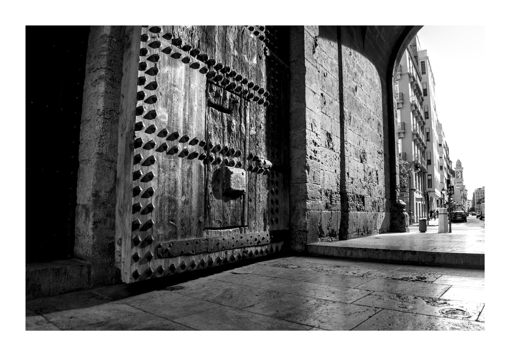
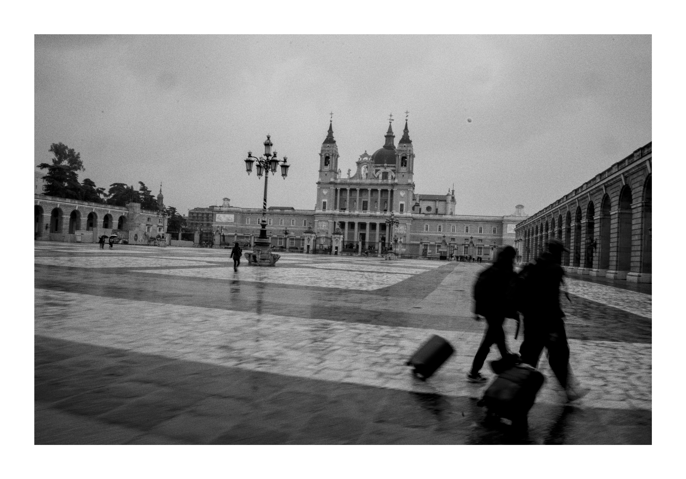
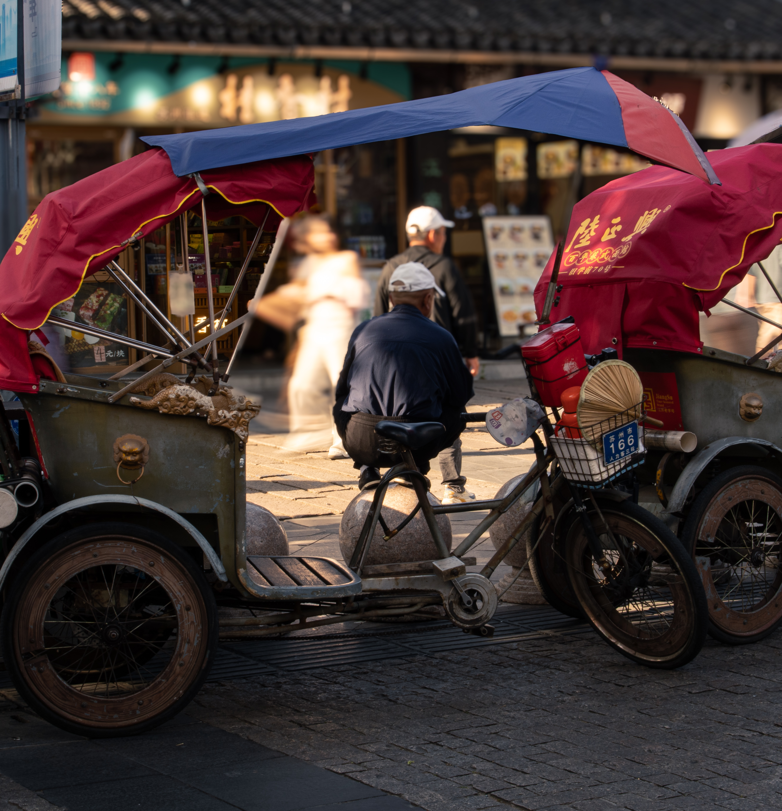
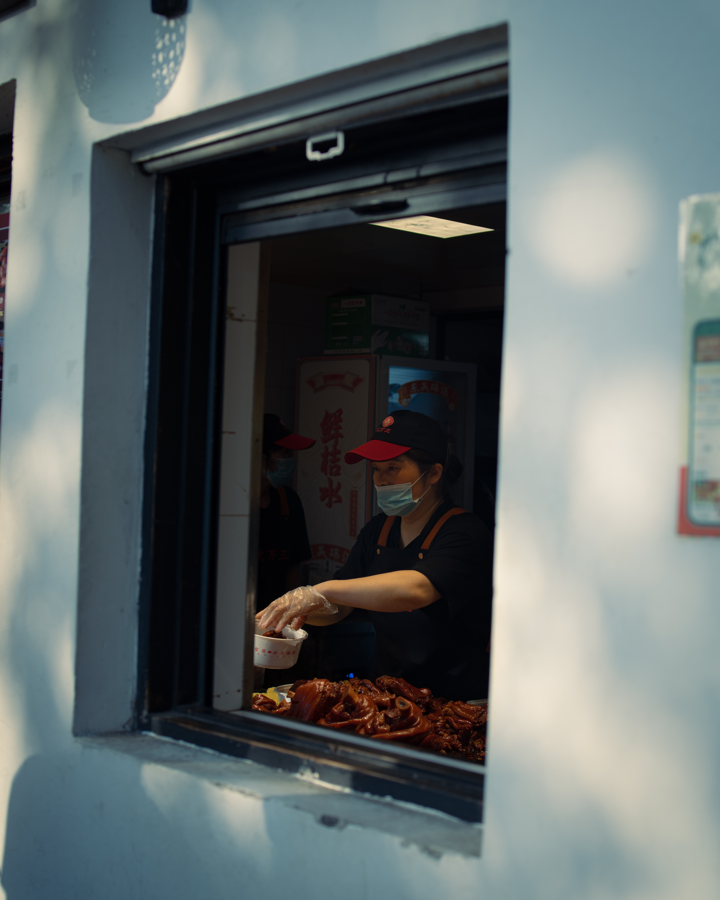

Hugo Hermer
Photographe amateur. Je capture la lumière, les silences et les détails qu'on ne remarque qu'une fois.

Planche contact






À propos

Je m'appelle Hugo Hermer, photographe amateur basé à Paris. J'ai commencé par curiosité, un appareil emprunté et un week-end sans plan précis — depuis, je ne sors plus sans lui.
Ce que je cherche à travers l'objectif, ce sont les moments qui passent inaperçus : une lumière qui traverse une pièce, un geste furtif, un paysage qu'on croise sans jamais s'arrêter. Ce site rassemble une sélection de mes images, comme une planche contact qu'on feuillette.
- Basé à Paris, France
- Disponible pour collaborations et tirages
- Argentique & numérique
Contact
Une photo à commander, un projet à discuter — écrivez-moi.